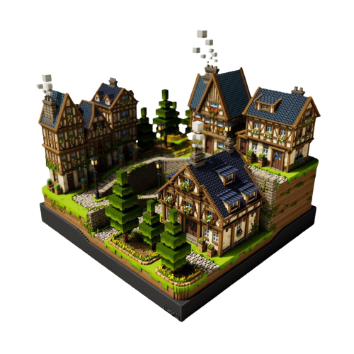

Elementium es un mundo dividido por tres reinos,los
cuales son identificados por sus elementos
agua,fuego y tierra, generando un equilibrio entre
lo mágico y lo natural de aquellas tierras...
Narrador..

en lo más profundo del bosque de la sepultura se encontraba un lugar mágico
el cual se encuentra dentro de un árbol y solo los más valientes llegan, sin pensarlo dos veces
emprende un viaje del cual no sabe nada, solo tiene las ansias de poder conocerlo y saciar sus expectativas..
Cuervo
-01.png)

NASH un explorador natural, lleva consigo un
cuaderno de aventuras en el cual plasma todo tipo de
criaturas mágicas, además posee un bastón...
Narrador..

A el gusta pasar su tiempo realizando labores de
agricultura y artesanía, al otro dia el cuervo le da
una carta,
la cual decía que nash tenía un gran
corazón por esto realiza una expedición,
ya que este
nunca se conforma con lo que conoce de la
naturaleza, sino que le encanta investigar y conocer
más de ella por sus medios, así que se adentra en lo
más profundo del bosque de la sepultura..
...
Narrador..


Narrador..
MOLLY es una chica dulce y aventurera, la cual pasa
la mayor parte de su tiempo con su adorable
gato llamado GRIS, con el que se comunica ya
que tiene el poder de hablar con los animales.
Narrador..
Ellos recorren diferentes lugares con el objetivo de tener nuevas experiencias, de repente llega un
cuervo el cual le dice que es un de las elegidas para cumplir una gran leyenda que proviene del
oscuro bosque y debe de ir a encontrar un lugar el cual se encuentra oculto y necesitan de su ayuda,
van hacia un nuevo destino algo oculto en lo más profundo del bosque…
Narrador..
Emprenden los tres viajeros a este viaje lleno de sorpresas,
pero se hace de noche y están en lo más profundo del bosque
de la sepultura
Narrador..
Yuls se encuentra cansada por esto decide parar y armar
su hoguera para comer un rato; alguien grita fuertemente…